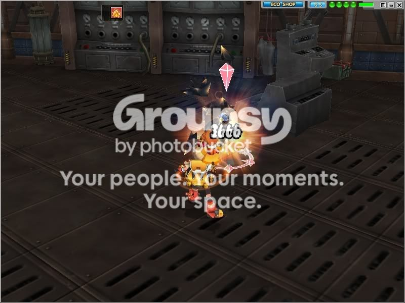

อย่าอัพเลย ครับสกิลแบกของ
รักพ่อรู้จักพอดีกว่าครับ ^^
รักพ่อรู้จักพอดีกว่าครับ ^^
http://eco.froztic.in.th/archive/ecofanclub/
http://eco.froztic.in.th/archive/ecofanclub/viewtopic.php?f=16&t=93
Minala เขียน:หยุดเล่นไปนานพอกลับมาเล่นอีกทีงงอะคะเลยมีคำถามมาถามเพือนๆนิดหน่อยอะ
1. เกาะ Tonka มีทีให้เก็บ lv ใหมคะ
2. lv 75 นีเก็บกันทีใหนแล้วคะตอนนี
3. Blacksmith นีตอนนีหาเงินกันยังไงแล้วอะเพราะเราตอนนีใช้เงิน
เก่าอยางเดียวเลยไม่รู้จะหาอะไรมาขายดี

Minala เขียน:>.< มีคำถามมาถามเพือนๆอีกแล้วคะยังไงก็ขอขอบคุณเพือนๆทีมาตอบด้วยนะคะ
1. Recipe Book นีจะเปิดหน้าต่อๆไปนีต้องใช้ skill ของตัวเองหรือให้ Npc สร้างให้ได้ใหมคะ
2. กระเป่า Mountain Ruck นีหาจากใหนเหรอคะสีอะไรก็ได้อย่างมีกับเขาบ้างอะ >.<
NeGiOn เขียน:Saga6 เข้า ส่งเควส79กระจายเลยฮับ ส่งชุดซ่อมทอง Alloy และ Metal
ได้เงิน 14400 เยอะมาก!!
raccoonjr เขียน:น่าเอาไปส่งจัง
แล้วเมื่อไหร่จะเจอกันเนี่ย จะพาเข้าริง